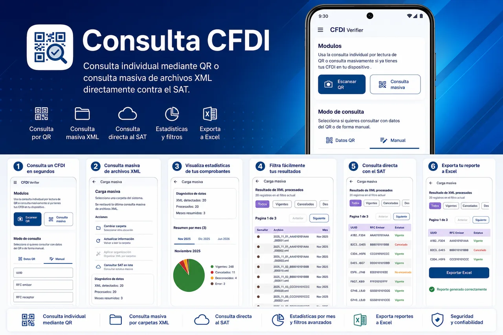

Lectura de QR
Lee códigos QR contenidos en comprobantes CFDI para iniciar consultas de forma sencilla.
CFDI 4.0 · Procesamiento local · Sin cuentas
CFDI Verifier consulta la autenticidad de tus CFDI directamente utilizando servicios públicos del SAT. También lee códigos QR, consulta archivos XML, realiza consultas por lote, organiza XML por mes, renombra archivos y exporta reportes de Microsoft Excel.

Funciones
La aplicación conserva la información aprobada y concentra las tareas habituales de consulta y administración fiscal en un flujo local.
Lee códigos QR contenidos en comprobantes CFDI para iniciar consultas de forma sencilla.
Consulta el estado de los comprobantes mediante servicios públicos disponibles del SAT.
Permite seleccionar archivos XML almacenados en el dispositivo para revisar su información fiscal.
Realiza consultas por lote para administrar varios comprobantes con menos trabajo manual.
Organiza archivos XML por mes de emisión cuando el usuario solicita esa acción.
Renombra archivos XML dentro del almacenamiento del dispositivo para mantenerlos identificables.
Genera reportes en formato Microsoft Excel con la información obtenida de los XML procesados.
Almacena solamente configuración local, la última consulta y datos necesarios para el funcionamiento normal.
Capturas
La galería utiliza únicamente capturas reales incluidas en el proyecto.
Seguridad y privacidad
CFDI Verifier minimiza el tratamiento de información y prioriza el procesamiento local de los archivos seleccionados por el usuario.
No usa servidores de CIIS y no sube archivos XML a infraestructura administrada por CIIS.
No requiere login, no solicita cuentas de usuario y no recopila información personal.
No muestra anuncios publicitarios, no vende información y no comparte información con terceros.
No está afiliada, patrocinada, autorizada ni representa al Servicio de Administración Tributaria.
FAQ
No. La aplicación funciona sin crear cuentas, sin registro y sin inicio de sesión.
No. Los archivos permanecen en el dispositivo del usuario y no son enviados a servidores administrados por CIIS.
No. CFDI Verifier no está afiliada con el SAT. Las consultas se realizan directamente contra servicios públicos del SAT.
No. CFDI Verifier no muestra anuncios publicitarios.
Soporte
Consulta, organiza, renombra y genera reportes desde una aplicación desarrollada por CIIS.